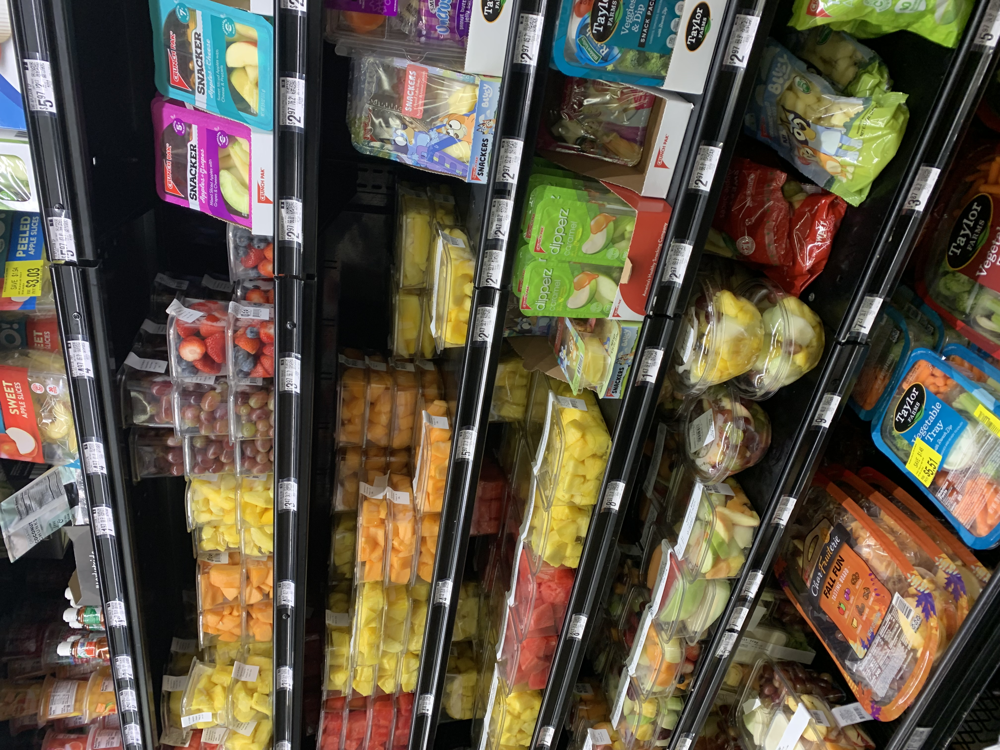
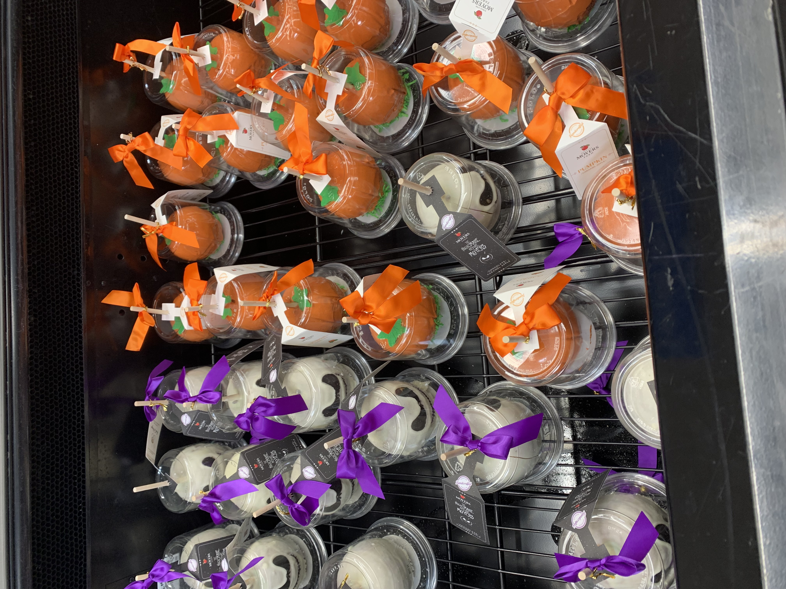
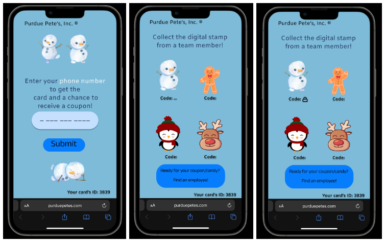
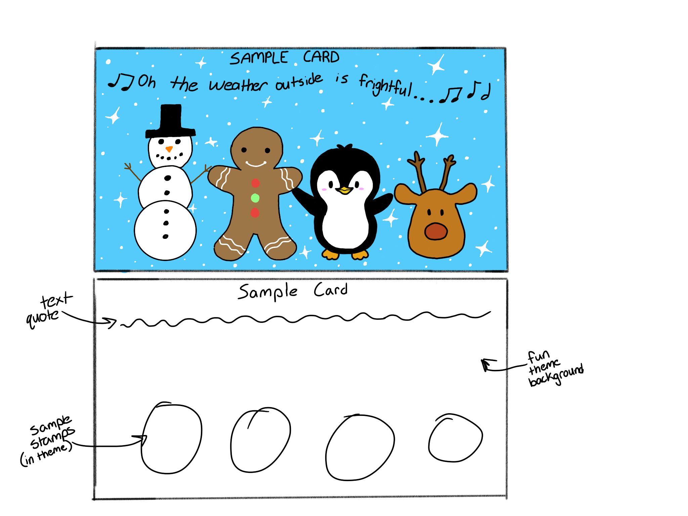
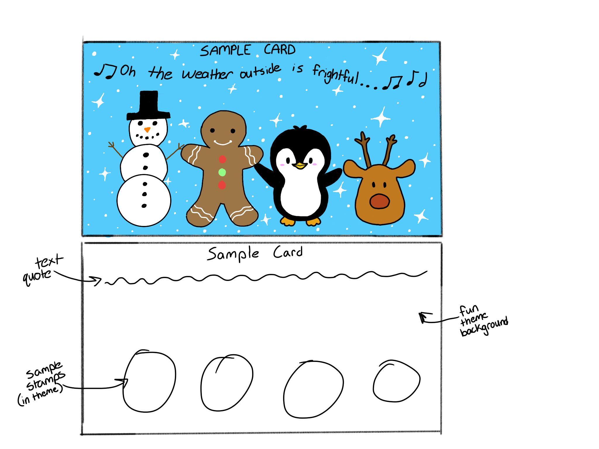

Our final design incorporates an adventure aspect that appeals to children and families with in the form a scavenger hunt style game. It includes stamp cards (physical and digital) for free sample stands located around the store. Going up to each of the stands results in a stamp on the card, and getting all four stamps results in a coupon and candy.
Initial Design Process
Brainstorming
Navigation in-store via screens
Navigation tool that uses lights to direct you where you need to go
Lights on the price tag to signal item location
Adventure/game aspect that appeals to children
If there are free samples, going up to each of the locations also builds up to a coupon
Promote the most bought item of the week
Observations
Things we looked out for during our observations
Time the walk to each corner
Note where products are
Waiting time for checkout
See if shoppers are actually inspecting their produce
Observe shopper groups (alone vs family, etc)
See how many items shoppers have


Data Collection
Interview Questions
How often do you go grocery shopping (in-person/online)? (How many times a week?)
When you grocery shop, do you usually take your time, or are you in a rush?
Do you tend to shop alone or with others (family)?
Do you value inspecting your items?
Do you find yourself spending most of your time in a specific area/category?
Do you grocery shop in-person or online more? Do you prefer one over the other?
What do you like (if anything) about in-person grocery shopping?
What do you not like/bad experiences with in-person grocery shopping?
What do you like (if anything) about online grocery shopping?
What do you not like/bad experiences with online grocery shopping?
Interview Takeaways
From our interviews, we found that most of our interviewees preferred shopping in person due to being able to inspect their groceries. We also found that many tended to shop alone and either took their time making a grocery list or on their first shopping trip would be in a rush after that, only going to the sections of the store that they needed to go to. A rushed shopper also pointed out that those shopping in a rush may want to save money, but don’t want to spend the time stopping at stands or going to locations out of their way. One of the interviewees also brought up past experiences shopping with their young kids. From this, we began to shift our focus away from having shoppers (who may be in a rush) save money to having shoppers visit the store with their family or close ones, taking the time to shop and connect with their loved ones as they try new food.
Survey Questions
Do you prefer shopping online or in person?
Did you ever have a bad experience with online shopping? If so, please share your experience(s).
Did you ever have a bad experience with shopping in person? If so, please share your experience(s).
Which do you value more? Inspecting your grocery items or the convenience of picking them up quickly?
Do you tend to shop alone or with others?
When you shop, do you usually take your time, or are you in a rush?
Is there a specific design of a grocery store you like? If so, describe why that is.
Where in a grocery store do you find yourself spending the most time and why?
If a grocery store offers more deals/sales/coupons, would that make you visit them more often?
In grocery stores, does receiving free food samples from food stands convince you to buy the promoted food item?
In a scenario where you can win a free coupon by searching for items throughout the grocery store, would you be willing to do so?
Survey Takeaways
Overall, the surveys revealed many shopping habits. Some key takeaways were that the majority of shoppers shopped alone and in person. This was likely due to more negative experiences with online shopping and the preference to take the time to inspect the items in person. Shoppers who responded also tended to take their time in the store and spend that time in areas with items that needed to be inspected or areas with their favorite foods.
Final Prototype
Core Theme: Creating nostalgic core memories for families
Design Features
Kids get a reward at the end relevant to them (candy instead of coupon). (Coupon for parents/adults, candy for everyone.)
Food stands last a week, coupons last the whole month.
If you collect all 12 cards and bring them back at the end of the year, you receive a $10 coupon.
If families have trouble finding the sample stands or are in a rush, they can ask one of the stands for hints on other locations.
A QR code at the front of the store allows app users to skip collecting a physical card.
Each free sample uses multiple ingredients to create fun food ideas, encouraging families to buy multiple foods and recreate the crafts at home.
The grocery store layout shows four free sample stands located in the four zones of the store. Each cycle, the sample stand locations will change but remain within these zones.
Digital Card Prototype

Physical Card Design
The back of the card includes information about the hunt, a drawing contest to get customers involved, the winner of the previous contest, some treat recommendations, and a qr code to submit photos from the event for a prize. These photos can be used promotionally for the future. The front of the card includes the characters that would need to be stamped in order to collect the coupon and candy.

.jpg) 
